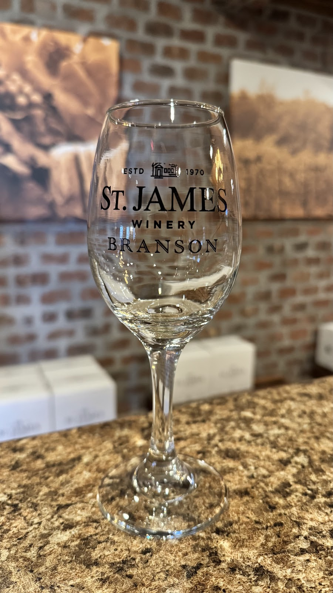
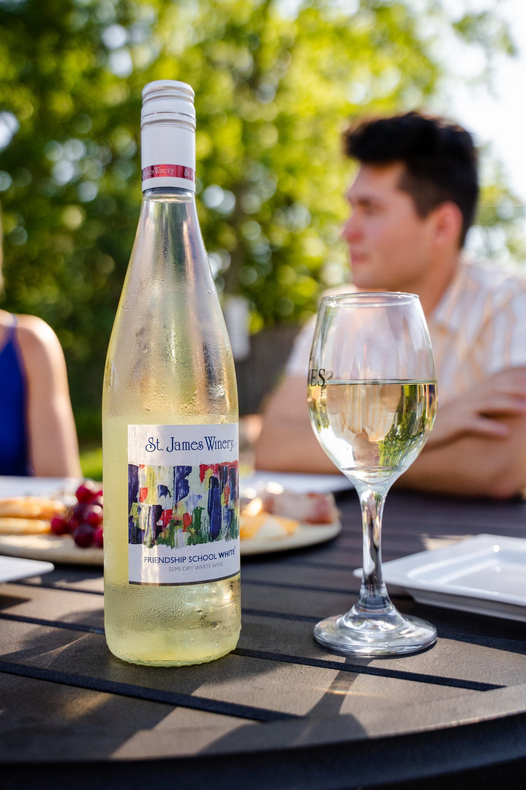
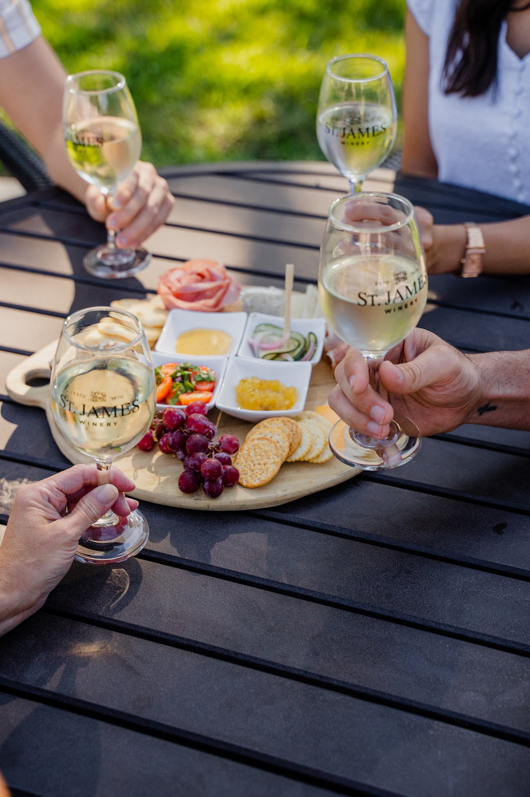
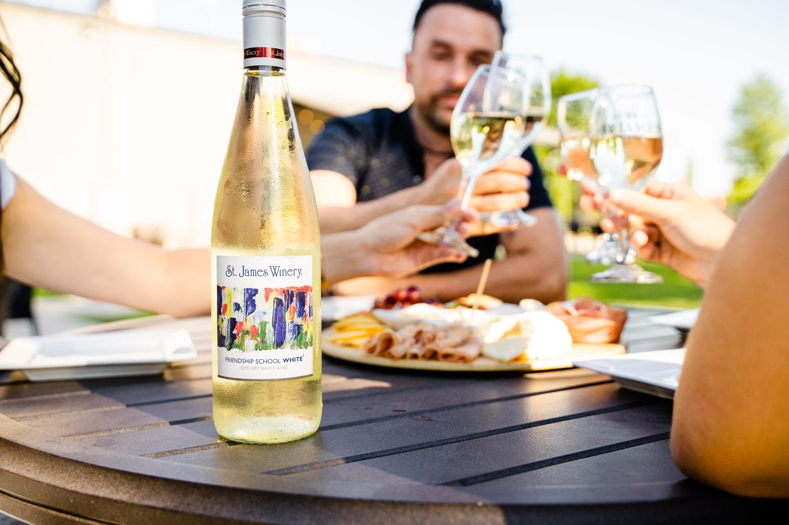

St. James Winery Branson
You liked the stop-motion drink build from the SVGator page, the one where a bottle tips and the glass fills. We have no photograph of anyone pouring, so here are the two ways to get that moment. Both loop on their own. Watch each for about ten seconds.
Nothing is photographed. The glass, the bottle, the stream and the wine level are all drawn, so the liquid genuinely rises as it is poured.
What this gets you: the exact moment you liked, with the wine level actually rising. Scales to any screen, weighs almost nothing, and needs no new photography. It is illustrated rather than photographic, so it reads as a brand device rather than a picture of the winery.
The same step-by-step structure, built from the winery's own photography. Four shots, four captions.




The honest limitation: these are four different scenes, so it cuts between them rather than flowing. The mojito example works because it is one fixed camera on one glass. This reads as a smart slideshow, not as a single continuous moment.
If someone at the winery films one pour into a branded glass on a phone, Option A's structure can be rebuilt with the real thing in place of the drawing, and it would look exactly like the reference. That is the only route to a genuine photographic pour, because none of the 47 images we hold shows one.